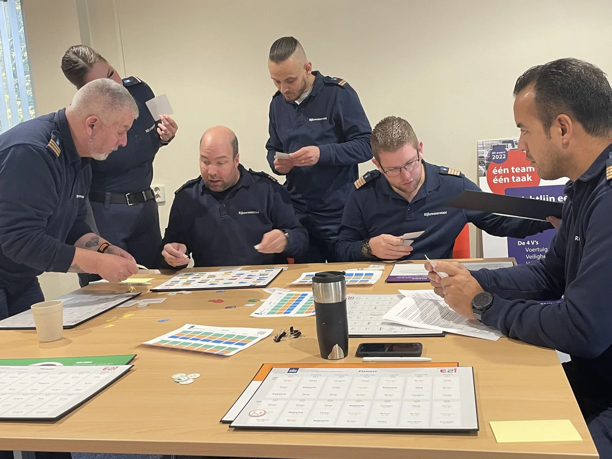
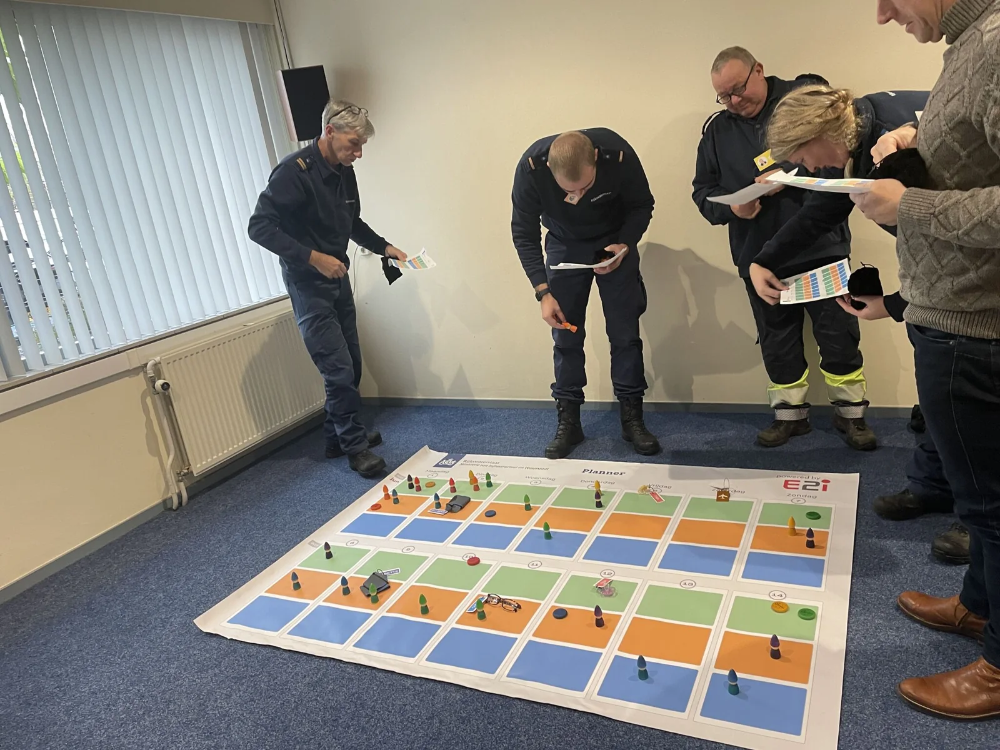

PROJECT / Serious games
Plan je Rot – meeroostergame
Een fysieke game rond weerstand tegen nieuwe planmethodes. Met persona’s en een groot planbord op de grond ontdekten medewerkers zelf hoe de methodes uitpakten voor hun gewenste diensten.
- Opdrachtgever / partner
- Rijkswaterstaat / Lighthouse e2i
- Mijn rol
- Game-ontwerp en facilitatie
- Periode
- aug 2023–feb 2024

PLANJE ROT

De vraag
Er was weerstand tegen nieuwe planmethodes: veel medewerkers dachten dat vooral de organisatie daarvan zou profiteren. Hoe maak je de gevolgen voor medewerkers zelf tastbaar?
De game
Ik ontwierp een fysiek spel met een groot planbord op de grond. Deelnemers speelden een persona en probeerden een zo gunstig mogelijk rooster te maken. Verborgen relaties gaven het spel een soapachtig karakter: iemand wilde een collega vermijden, terwijl een verliefde persona juist dezelfde dienst wilde.
Wat deelnemers ontdekten
Door de methodes zelf te spelen, merkten deelnemers dat zij bij de ene methode veel minder gewenste diensten kregen dan bij de andere. Zo konden zij de verschillen vanuit hun eigen rol ervaren.
Mijn bijdrage
Game-ontwerp en facilitatie voor Rijkswaterstaat via Lighthouse e2i: een roostervraagstuk vertalen naar een fysieke, speelse ervaring.